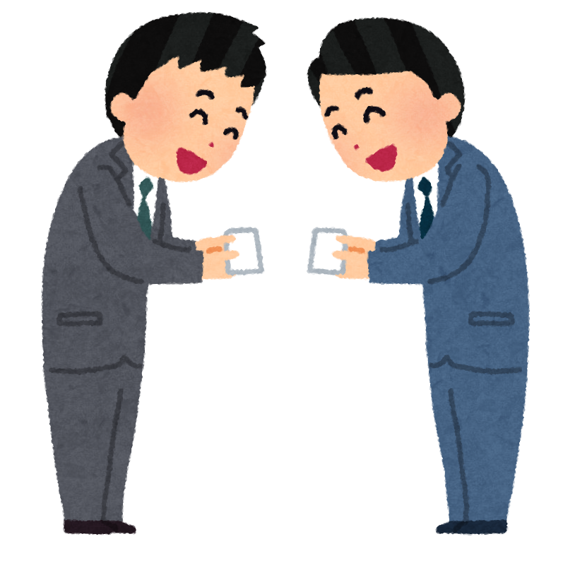
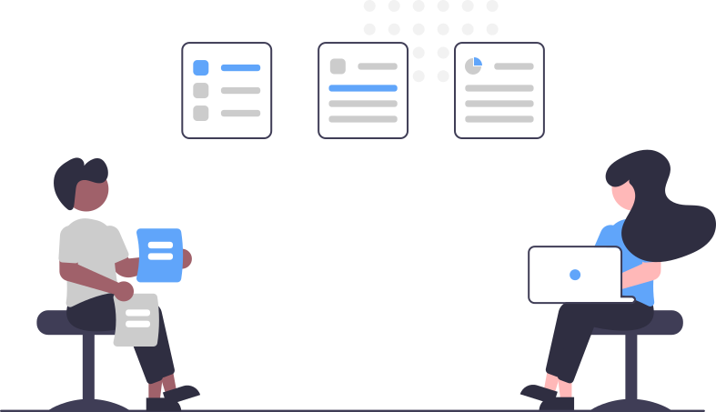

Follow one real workday, start to finish — this is what using T00 actually looks like.
I ask, T00 answers — a to-do list appears on its own, with one item already flagged: a client email asking for a website, plus a meeting.
One line, referencing the client's email — T00 handles the rest: read it, define the requirements, build the site.
T00 built it on its own — already live at its own address, matching every requirement.
Site link in hand — business cards exchanged, then straight to the laptop.

The live site is already up on my phone. Showing something real beats describing it — specific feedback comes right back.

One email with the client's notes, and T00 replies with exactly what changed and where.
We review the site together again — this time the client has concrete changes in mind, not just impressions.
Notes in hand, it's time to head back and get these changes done.
This morning's request, the in-person notes, the email from the client — T00's req/reply log keeps it all as one continuous thread, so nothing gets lost in the details.
Site live, client happy, today's list one item shorter.
This is what a real workday with T00 looks like — built by Jason, powered by the T00 framework.
See what else T00 can do →